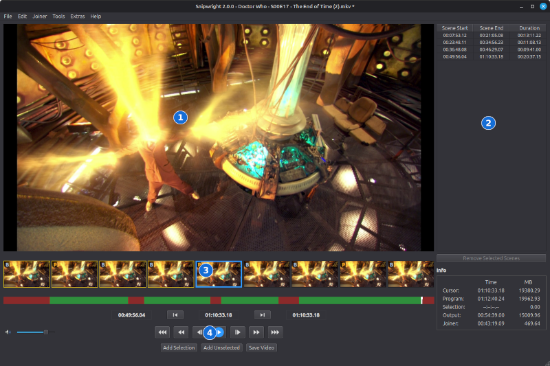
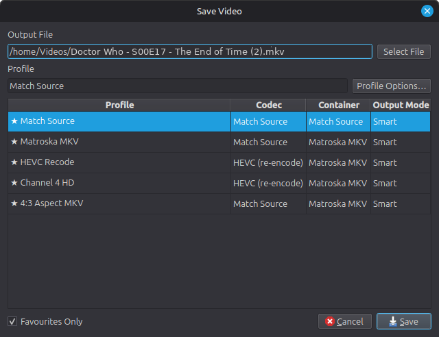
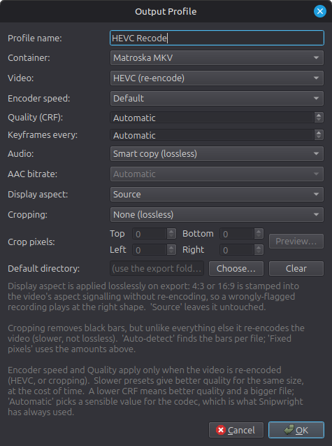
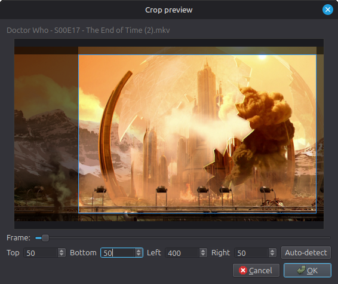
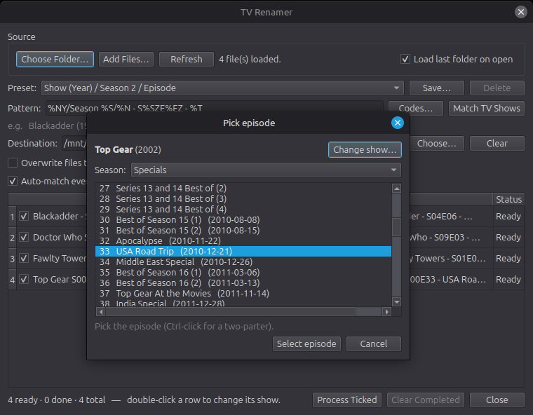
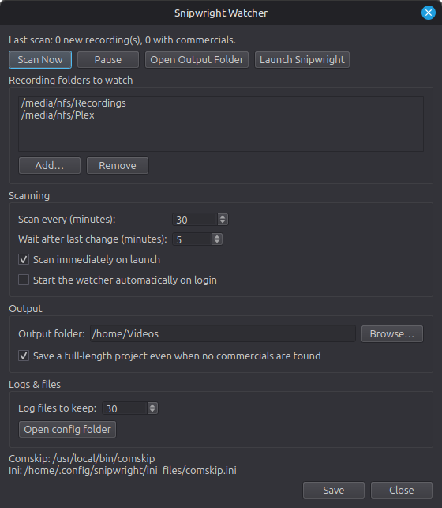

A frame-accurate, lossless video cutter for Linux — inspired by VideoReDo.
Snipwright cuts unwanted sections — such as adverts — out of video recordings frame-accurately and, wherever possible, losslessly: the kept video is stream-copied rather than re-encoded, so there is no quality loss and exports are fast. It handles common broadcast and file formats, including H.264 and MPEG-2, and works with most videos rather than any one source in particular.
If Snipwright feels familiar, that is deliberate. I have used VideoReDo for around two decades, and I have kept the interface as close to it as I sensibly can — comfortable and familiar for anyone moving across — and made the functionality work in a VideoReDo-like way wherever possible. Think of it as a lighter alternative, though: Snipwright brings the core VideoReDo workflow to a native Linux application, but it does not aim to match VideoReDo's full feature set.
Beyond cutting, Snipwright can detect commercials automatically with Comskip, rename recordings using data from TMDB, and help semi-automate the whole record-to-library routine through a folder watcher and a batch queue. It does not run end-to-end on its own — you stay in the loop — but it takes a lot of the manual work out.
ffmpeg and ffprobe on your
system. Comskip is optional but recommended for automatic ad detection (see section 4).Open a recording with File → Open Video (Ctrl+O),
or pick a recent one from File → Open Recent. Snipwright opens the
common broadcast and file types — .ts, .mkv,
.mp4, .m2ts, .mov, .avi and the
MPEG program-stream family (.mpg, .mpeg, .vob)
—
and you can pick any other file with the All files filter. You can also
drag a file onto the window to open it, and a .vprj project
opens straight into the editor. Choosing several videos at once — whether
in the Open dialog or by dropping them together — offers to add them all to the
joiner list, each as a whole file (see Joining recordings). The
editor window has four main areas:

The editor window: ① preview · ② scene list · ③ thumbnail bar and timeline (green = keep, red = cut) · ④ transport controls.
The first time you open a recording, Snipwright builds a frame index so it can seek accurately. This is cached, so opening the same file again is instant.
packaging
folder — install-linux.sh for Debian/Ubuntu/Mint and
install-windows.ps1 for Windows — which set up the dependencies, a
virtual environment, and menu/desktop shortcuts, so you can start it from your
applications menu like any other program. See the README there for details.Snipwright offers the same two editing modes as VideoReDo, chosen under Settings → General → Editing mode. The choice takes effect the next time you open a video.
Both modes share the same underlying cut list and produce identical output — only the way you build it differs. The buttons beneath the transport controls change to match the mode, and the list on the right shows either the cuts or the kept scenes accordingly.
Automatic ad detection (see Automatic ad detection) works in
either mode: Comskip marks where it believes the breaks fall, giving you a starting point
to refine rather than a blank timeline. How close those marks land depends on your Comskip
.ini settings and the channel, so it is always worth checking each one before
saving.
Use the transport buttons or the keyboard to move through the recording: step one frame at a time, skip forwards or backwards, or jump to the start or end. Watch the thumbnail bar as you step — it makes finding the exact frame of a cut much easier. To jump to a specific timecode, use Goto (Ctrl+G).
There are three skip distances, 10, 30 and 120 seconds by default:
All three distances can be changed under Settings → General, and the buttons’ hover hints update to match. The shortcuts themselves are listed in Keyboard shortcuts.
The mouse wheel scrubs as well. Over the picture, the thumbnail strip or the navigation bar, one notch moves one frame — handy for settling on an exact cut point without taking your hand off the mouse. Hold Ctrl and each notch moves by the short skip distance instead (ten seconds unless you have changed it), so you can cover ground quickly and then fine-tune. Scrolling up moves forward through the recording, scrolling down moves back.
Repeat for each advert break. A cut landing in the middle of the programme splits it in two, so you can work through a recording removing one break at a time. To top and tail a recording in a single action, mark the programme itself and press Trim Unselected (Ctrl+T), which cuts away everything outside the marked section.
The list on the right shows the cuts you have made. Selecting a row and removing it puts that part of the programme back. Clear All Scenes (Shift+Insert) removes every cut and restores the whole recording.
Repeat for each segment you want to keep. If you mark In/Out across an existing scene, the new selection replaces it, so correcting a cut is just a matter of re-marking it.
The In and Out markers stay where they are after you add a scene, and each is replaced only when you next place it. So if you notice a boundary is a frame or two out immediately after adding, nudge that one marker and press Add Selection again — the scene you just made is adjusted rather than a second one added. The same applies to Cut Selection in Cut Mode.
Selecting a row in the list beside the video — by clicking it or with the Up/Down keys — loads it into the In and Out markers and takes the playhead to its start, which is the quickest way to correct one you have already made: select it, nudge whichever marker is wrong, and press Add Selection (or Cut Selection in Cut Mode) to replace it. The Selection row of the Info panel shows the duration and size of whatever is marked.
Add Unselected (Ctrl+Insert) does the inverse: it fills in every gap as a kept scene — handy when it is quicker to mark the parts you want to remove and then invert. Clear All Scenes (Shift+Insert) starts over.
The coloured bar beneath the thumbnails shows the shape of your edit at a glance:
If the file you open already has chapters, their start points are added as scene markers automatically and the status bar says how many were loaded. This is common with files that have been through an encoder — upscaled or re-encoded material usually keeps its chapters, and Snipwright's own exports write your markers out as chapters, so a file you saved earlier reopens with those marks in place.
A chapter at the very beginning of the file is ignored, since encoders write one there to mean “the start” rather than to mark anything. Opening a project brings its own markers and those are never replaced. Recordings straight off a tuner have no chapters, so nothing changes for them.
Rather than mark everything by hand, you can let Comskip find the adverts. Run it from the Tools menu (Ctrl+A); it analyses the recording in the background and turns its results into kept scenes, which you can then fine-tune by eye.
Comskip is a separate, free program and is not bundled with Snipwright,
so you will need to download and install it first from its home on GitHub:
github.com/erikkaashoek/Comskip.
Once it is installed, point Snipwright at the Comskip binary and your .ini file
under Settings → External tools.
$c format), you can use a different .ini per
channel. Tick “Pick the .ini by channel name in the filename”
under Settings → External tools, then place files named
Comskip_<channel>.ini (such as Comskip_BBC.ini or
Comskip_ITV.ini) in the same folder as your main .ini. When the
channel name appears in a recording's filename that file is used — the longest,
most specific match winning — otherwise the main .ini applies. Matching
is not case-sensitive, and it works for both the watcher and manual detection. Recorders
that don't put the channel in the filename (such as Plex or Jellyfin) simply use the main
.ini.Your cuts can be saved and reloaded as a project. Import Project reads
VideoReDo .vprj files (both the V5 VRD and V3 Comskip dialects) and EDL files;
Export Project writes them back out. This lets you move edits between
Snipwright and other tools, or keep a record of your cuts without re-exporting the video.
When your scenes are ready, choose File → Save Video (Ctrl+S). You pick an output profile and a destination file in one step.

The Save Video dialog, with the output profile and destination chosen together.
The cut is lossless wherever it can be: the kept video is stream-copied, not re-encoded. The only routine exception is a handful of frames at each cut boundary, which are briefly re-encoded so the cut can land on exactly the frame you chose rather than the nearest keyframe. A full re-encode of the whole video — which is significantly slower than a lossless save — only happens if you crop the video, choose a profile that re-encodes to HEVC (see below), or save to a container that the source's streams are not compatible with.
.ts, .mkv and .mp4 alike — MP4 needs
a little help, as its players do not read the flag directly, so the track is additionally
named “visual impaired”. Carrying the flag into MKV needs MKVToolNix 52 or
newer; with an older version the track is still exported, just without the marking. DVB subtitle tracks are carried through too, cut to
match the video, when saving to .ts or .mkv — MP4 cannot
carry DVB subtitles, so they are dropped in that format only.If you keep different series on different drives, add those folders under Settings → Files & folders → Favourite folders. The Save Video dialog then has a Folders button that sends the export straight to one of them, keeping the file name you already have. Drag the list to reorder it.
The Batch Manager has a Folder column, so each job in the queue can go somewhere different — two episodes of one series to one drive, something else to another. Each row starts on Default, meaning the batch's own output folder; pick a favourite to send that one job elsewhere. Names are still derived and de-duplicated as usual, so two jobs landing in the same folder won't overwrite each other.
Choosing a favourite applies to that one export. Your usual destination — whichever you set under Saving videos above — is what the dialog offers next time, so a one-off diversion doesn't quietly become the new default.
A lossless save is usually over in seconds, but a full re-encode — HEVC, or a crop — can run for a long time, and the export window keeps the editor locked while it does. If you would rather get on with something else, press Send to Batch in the export window.
Nothing restarts and nothing is lost. The export carries on from exactly where it had reached, still writing to the file you chose, under the name you gave it — the only thing that changes is that it now reports its progress as a row in the Batch Manager instead of holding the editor. You get the editor straight back and can open another recording, cut it, and even save that one while the first is still encoding.
Manage profiles under Tools → Manage Profiles. The settings below are the fields inside a profile, not the profile names you choose from when saving — Snipwright ships with three profiles (Match Source, Matroska MKV and MP4), and each of them is simply a saved combination of these fields. Note that “Match Source” is both the name of a built-in profile and one of the Container choices, which is worth keeping straight. A profile controls:
.ts stays a .ts.
Editing an output profile.
Cropping removes letterbox or pillarbox black bars. Because the bars are part of the picture, cropping triggers the full re-encode mentioned above, so it is much slower than a normal lossless export. Choose Auto-detect to find the bars per file, or Fixed pixels to set them by hand. With a recording open, the Preview… button shows a real frame with the crop shaded in; use the slider to pick a frame, adjust the edges by eye, or let it auto-detect.

The crop preview shades the area to be removed over a real frame.
The Joiner menu combines scenes — from one recording or several — into a single video. There are two ways to fill the list:
Joiner → Edit Joiner List is where the list is arranged: reorder or remove entries, add title cards (text over a colour or background image), set per-clip fades to and from black, save and load joiner lists, or send an entry back to the editor to trim it.
Joiner → Create Video From Joiner List renders the result through the same Save Video dialogue and output profiles as a normal save. Scenes that share one format are joined losslessly by stream copy — an MKV gets a chapter at each join — while a mix of formats is re-encoded to a common one (Snipwright recommends suitable settings). Title cards and fades apply during a re-encoded join, so adding them to otherwise matching clips trades a little speed and quality for the effect.
Tools → Trim and Copy Source File takes a chunk out of a recording by copying bytes straight from one file to another. Nothing is decoded, nothing is re-encoded and nothing is examined — which makes it very fast indeed, and useful for two things in particular: salvaging a usable piece of a recording that is too damaged to open properly, and cutting a small sample out of a large file to send to someone.
Choose where the copy starts and stops:
Snipwright can rename recordings into a tidy layout that media servers like Plex, Jellyfin, Emby and Kodi understand, using data from TMDB (The Movie Database). There are separate renamers for TV and film, reached from the Tools menu.
Add recordings and the renamer matches each to a show and episode. Double-click a matched row to open the episode picker, where you can choose the exact season and episode; Ctrl-click two episodes for a two-part story, or use Change show… if the auto-match was wrong. Season 0 episodes are filed into a Specials folder. A naming pattern controls the folder and file names, and is remembered between runs. Pick a ready-made layout from the Preset list, or type your own; Save… stores the current pattern under a name so it joins the list for reuse, and Delete removes one of your own saved presets (the built-in ones can't be deleted). The TV and film renamers keep their own separate preset lists.

The TV renamer, with the episode picker open over the recording list.
The film renamer works the same way for films, matching each recording to a title and year from TMDB.
The watcher takes the donkey-work out of finding the adverts. It monitors your chosen recording folder(s) and, when a new recording appears, runs Comskip to mark where it thinks the adverts are, saving the result as a project file. It does not cut or rename anything itself — it prepares the cuts for you. You stay in control: open a project in the editor to check and adjust the marks by eye, or add it to the Batch Manager to process as-is.

The watcher: the folders it monitors, its schedule, and where it saves projects.
Not every recording in the folder is yours to worry about. Right-click the tray icon and
choose Edit ignore list, then add one programme title per line, so a
housemate's soaps never go near Comskip. Matching is not case-sensitive, and lines beginning
with # are comments.
The Match setting beside that list decides how an entry is compared with a recording's file name:
Gone also ignores Star Trek S01E03 Where No Man
Has Gone Before — the word appears in the episode title, so the recording is
skipped and no project appears, with nothing obvious to say why. Matching on the programme
name avoids that entirely.Whichever is chosen, a single entry written with a leading * is always matched
anywhere — so *Christmas Special works without changing the setting for the
whole list. If a recording is skipped and you cannot see why, the Watcher's log names the
entry that caught it.
Over the years such a list fills up with programmes that finished long ago. Under Housekeeping you can have the watcher drop entries that no new recording has matched for a set period — twelve months suits most series, which return annually if they return at all. This is off by default. Review and prune now lists every title with the date it was last seen, oldest first, so you can see at a glance what has gone stale and untick anything you want to keep.
The Batch Manager is where the actual cutting happens for several files at once. Queue the current recording from the editor with Queue to Batch (Ctrl+B), or feed it the project files the watcher has prepared, then run the queue from Tools → Batch Manager. Each job uses an output profile, so profile-based options such as cropping apply here too. (Renaming is a separate step, handled by the renamers — the Batch Manager itself does not rename.) You can close the Batch Manager window while a batch is running — the batch keeps going in the background, and reopening it from Tools → Batch Manager shows the live progress. Add from Watch Folder only brings in recordings that are not already queued — including ones you sent over yourself with Queue to Batch — so you can press it as often as you like.
Open Tools → Settings. The pages are:
.ini), plus the optional per-channel
.ini selection described in section 4.Keyboard shortcuts can also be viewed and customised here, through the built-in config editor.
Repairing a recording with Quick Stream Fix writes a working copy of it to the system temporary folder, and the editor cuts that copy rather than the original. Those copies are whole video files — often several gigabytes — and they are kept, so you can close Snipwright and come back to a recording later without repairing it again. Under Settings → Maintenance they are deleted once they reach a set age, a week by default.
/tmp
at every reboot, so working copies disappear on their own; Windows never clears its temporary
folder, so without the age setting they would build up indefinitely. The same page shows how
much space they are using and offers to open the folder or delete them now.Under Settings → Maintenance, Check for new versions can be set to Never, Daily, Weekly or Monthly. When a newer release exists, Snipwright says so and offers to open the releases page.
These are the defaults; all of them can be changed in Settings.
The three skip distances default to 10, 30 and 120 seconds and can be changed under
Settings → General. Note that in config.json these
shortcuts keep their original names — jump_back_30 and so on —
whatever distance you set them to, so a “30” in the name reflects the default
rather than the current setting.
| Action | Shortcut |
|---|---|
| Open Video | Ctrl+O |
| Save Video | Ctrl+S |
| Close Video | Ctrl+F4 |
| Open / Save / Save Project As | Ctrl+Shift+O / Ctrl+P / Ctrl+Shift+P |
| Queue to Batch | Ctrl+B |
| Play / Pause | Space |
| Step one frame back / forward | Left / Right |
| Short skip back / forward | Ctrl+Shift+Left / Ctrl+Shift+Right |
| Medium skip back / forward | Ctrl+Left / Ctrl+Right |
| Long skip back / forward | Shift+Left / Shift+Right |
| Jump to start / end | Home / End |
| Mark In / Mark Out | F3 / F4 |
| Add Selection | Insert |
| Add Unselected | Ctrl+Insert |
| Cut Selection | Ctrl+X |
| Trim Unselected | Ctrl+T |
| Select All | Ctrl+Shift+A |
| Clear All Scenes | Shift+Insert |
| Clear current selection | Delete |
| Previous / Next scene | F5 / F6 |
| Go to scene start / end | S / E |
| Toggle scene at cursor | A |
| Detect commercials (Comskip) | Ctrl+A |
| Go to timecode | Ctrl+G |
| Show video program info | Ctrl+L |
| Undo / Redo | Ctrl+Z / Ctrl+Y |
ffmpeg and
ffprobe are installed and, if needed, set their paths under
Settings → External tools..ini file and benefits from being tuned to your source — in particular
its frame rate. A well-tuned ini makes a big difference to detection quality. If different
channels need different settings, see the per-channel .ini option in section 4.Snipwright covers the parts of VideoReDo most people used day to day, but it does not always use the same words for them. If you are looking for a familiar setting and cannot find it, it is probably here under another name.
| VideoReDo | Snipwright | Notes |
|---|---|---|
| Intelligent Recode | The default — no setting to change | Frames are copied wherever possible and re-encoded only where a cut falls
mid-GOP. This is how every export works unless you ask for a full re-encode, and it
is why a lossless save of an hour-long recording finishes in seconds. The log records
the split for each export, for example
1145 segment(s) - 1145 copied, 0 re-encoded. |
| Force Recode | Output profile → Video: HEVC | Re-encodes the whole file rather than just the joins. Cropping does the same, because black bars cannot be removed without re-encoding. |
| Max GOP length | Output profile → Keyframes every | Expressed in seconds rather than frames, so it does not need changing when the frame rate does. Automatic uses five seconds for HEVC. |
| Quality Factor Adjustment | Output profile → Quality (CRF) | A quality target for the encoder rather than a percentage of the source. Lower means better quality and a larger file; Automatic picks a sensible value for the codec. |
| Cropping and Resizing | Output profile → Cropping | Automatic black-bar detection or fixed pixel amounts, with a preview against a real frame from the recording. |
| Aspect correction | Output profile → Display aspect | Applied by correcting the aspect signalling, so it costs nothing and does not re-encode. |
| Output profiles | Output profiles | Same idea: named sets of output settings, chosen when you save or per batch job. Tools → Manage Profiles. |
| QuickStream Fix | Tools → Quick Stream Fix | Repairs broken broadcast streams by remuxing them. Snipwright also offers it automatically when a recording will not open cleanly. |
| Ad-Detective | Comskip, plus the Watcher | A different tool, not a rebadged one. Ad-Detective was built into VideoReDo and
tuned through its own parameters dialogue; Comskip is a separate program that Snipwright
calls, and it is configured through an .ini file rather than a GUI. There
is no equivalent of the Ad-Detective parameters window. What Snipwright does with the
result is the same idea: the detected breaks become ready-to-review cuts you confirm
before saving, and the Watcher can run the whole thing over new recordings unattended.
Comskip repays being tuned to your source — its frame rate especially — and
a good .ini makes a large difference to detection quality. |
| Batch Manager | Batch Manager | Same idea, and an export already running in the editor can be handed to it mid-flight with Send to Batch. |
Snipwright is open source — github.com/infidelus/snipwright.